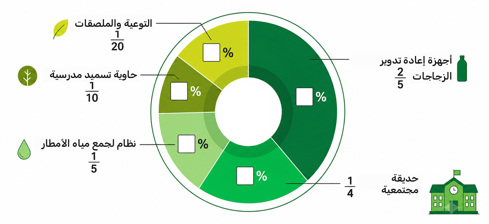

ضعوا علامة على جميع الجمل التي تبدو لكم مألوفة، أي تلك التي سمعتموها أو قلتموها مؤخرًا:
لأنها تتيح لنا فهم البيانات بسرعة، ومقارنتها بشكل عادل، واتخاذ القرارات دون التوقف وإعادة الحساب في كل مرة.
لكن.. لن تُعرض البيانات دائمًا كنسب مئوية.
قد تصادفون أحيانًا كسرًا، مثل 13 من أصل 30، وأحيانًا عددًا عشريًا، مثل 0.65.
لكي نفهم معنى المعطى ونقارنه بمعطيات أخرى، يجب أن نعرف كيف ننتقل بين التمثيلات.
في هذه الوحدة سنتعلم الانتقال بين الكسر والعدد العشري والنسبة المئوية،
لفهم البيانات ومقارنتها واتخاذ قرارات صحيحة وعادلة.
لعب آدم وسامر معًا لعبة عبر الإنترنت.
أثناء اللعب، ظهر على جهاز سامر تنبيه بانخفاض شحن البطارية.
أمعن سامر النظر في مؤشر البطارية وقال:
"أفّ، لم يبقَ لديّ سوى شريطين."
ألقى آدم نظرة على شاشته وابتسم:
"لا بأس، تبقّى لديّ أيضًا شريطان بالضبط."
هل يمكن معرفة مَن تبقّى لديه شحن أكثر في البطارية؟
واصل الاثنان اللعب.
بعد بضع دقائق انطفأ هاتف سامر،
بينما واصل آدم اللعب كالمعتاد.
كيف يمكن أن يحدث هذا؟
فقط بعد ذلك لاحظوا تفصيلاً صغيراً، لكنه مهم.
لكن على جهاز آدم، الشريطان المتبقيان هما 2 من أصل 4.
لم يتبقَّ في جهاز سامر سوى شريطين، وهما 2 من أصل 10.
في جهاز خالد، يتكوّن مؤشر البطارية من 4 أشرطة في المجموع.
إذا تبقّى لديه شريطان من أصل 4، فهذا يعني أنه تبقّى لديه من شحن البطارية.
بجهاز سامر، مقياس البطارية أكثر تفصيلاً ويتكون من 10 أشرطة في المجمل.
إذا تبقّى لديه شريطان، فهذا يعني أنه تبقّى لديه فقط من شحن البطارية.
ماذا حدث هنا؟
لكليهما بقي شريطان، لكنهما لا يمثلان الكمية نفسها المتبقية في البطارية.
في جهاز آدم، الشريطان المتبقيان كانا 2 من أصل 4 أشرطة،
أي: النصف = 50% من شحن البطارية.
في جهاز سامر، الشريطان المتبقيان كانا 2 من أصل 10،
أي: .
فقط بعد التحويل من الكسر إلى النسبة المئوية، أمكننا فهم مقدار شحن البطارية
المتبقي فعليًا لدى كلٍّ منهما.
يمكن تمثيل المعطى نفسه ككسر، أو كعدد عشري، أو بالنسبة المئوية.
القدرة على التنقل بين هذه التمثيلات تساعدنا على استخدام البيانات
بما يتناسب مع ما نبحث عنه.
سنبدأ التدريب بعد قليل.
لحظة قبل أن نبدأ، لنحلّ تمريناً واحداً معاً.
تأمّلوا التمرين التالي. لا تحلّوه، فقط انظروا إلى المعطيات وفكّروا: هل لديكم اتجاه للحل؟
ثلاثة أصدقاء تدرّبوا على التسديد في السلة:
هدفنا: معرفة مَن منهم الأفضل في التسديد إلى السلة.
تأمّلوا التمرين التالي. لا تحلّوه، فقط انظروا إلى المعطيات وفكّروا: هل لديكم اتجاه للحل؟
ثلاثة أصدقاء تدربوا على التسديد في السلة:
هدفنا: معرفة مَن منهم الأفضل في التسديد إلى السلة.
ما الذي يجب فعله لمقارنة النتائج؟
تأمّلوا التمرين التالي. لا تحلّوه، فقط انظروا إلى المعطيات وفكّروا: هل لديكم اتجاه للحل؟
ثلاثة أصدقاء تدربوا على التصويب نحو السلة:
هدفنا: معرفة مَن منهم الأفضل في التسديد إلى السلة.
تأمّلوا التمرين التالي. لا تحلّوه، فقط انظروا إلى المعطيات وفكّروا: هل لديكم اتجاه للحل؟
ثلاثة أصدقاء تدربوا على التصويب في كرة السلة:
هدفنا: معرفة مَن منهم الأفضل في التسديد إلى السلة.
للمقارنة بسهولة، نريد تحويل جميع الكسور إلى نسب مئوية.
النسبة المئوية تعني "من أصل 100"، لذلك سنحاول تحويل الكسور إلى كسور مقامها 100.
أدخلوا البسط في المعادلة
تأمّلوا التمرين التالي. لا تحلّوه، فقط انظروا إلى المعطيات وفكّروا: هل لديكم اتجاه للحل؟
ثلاثة أصدقاء تدربوا على التصويب نحو السلة:
هدفنا: معرفة مَن منهم الأفضل في التسديد إلى السلة.
تأمّلوا التمرين التالي. لا تحلّوه، فقط انظروا إلى المعطيات وفكّروا: هل لديكم اتجاه للحل؟
ثلاثة أصدقاء تدرّبوا على التسديد في السلة:
هدفنا: معرفة مَن منهم الأفضل في التسديد إلى السلة.
أدخلوا البسط في المعادلة
تأمّلوا التمرين التالي. لا تحلّوه، فقط انظروا إلى المعطيات وفكّروا: هل لديكم اتجاه للحل؟
ثلاثة أصدقاء تدرّبوا على التسديد في السلة:
هدفنا: معرفة مَن منهم الأفضل في التسديد إلى السلة.
تأمّلوا التمرين التالي. لا تحلّوه، فقط انظروا إلى المعطيات وفكّروا: هل لديكم اتجاه للحل؟
ثلاثة أصدقاء تدربوا على التسديد في السلة:
هدفنا: معرفة مَن منهم الأفضل في التسديد إلى السلة.
هنا أيضًا، نريد عرض النتيجة كنسبة مئوية.
أدخلوا البسط في المعادلة
تلميح: للوصول إلى مقام مئة، نضرب المقام في 25.
تأمّلوا التمرين التالي. لا تحلّوه، فقط انظروا إلى المعطيات وفكّروا: هل لديكم اتجاه للحل؟
ثلاثة أصدقاء تدرّبوا على التسديد في السلة:
هدفنا: معرفة مَن منهم الأفضل في التسديد إلى السلة.
تأمّلوا التمرين التالي. لا تحلّوه، فقط انظروا إلى المعطيات وفكّروا: هل لديكم اتجاه للحل؟
ثلاثة أصدقاء تدرّبوا على التسديد في السلة:
هدفنا: معرفة مَن منهم الأفضل في التسديد إلى السلة.
مَن الأفضل في التسديد إلى السلة؟
قارنوا بين النسب المئوية وأجيبوا:
لاحظنا أنه عندما تُعرض النتائج بأعداد مختلفة
(دون مقام مشترك)، يصعب مقارنتها.
بمجرد أن حوّلنا المعطيات إلى نسب مئوية، أصبحت المقارنة سهلة وواضحة.
النسب المئوية تحوّل الكسور إلى مقادير سهلة المقارنة.
والآن، تمرين للإحماء!
طلاب مجموعة القيادة الخضراء في المدرسة حصلوا على ميزانية سنوية خاصة لتطوير مشاريع بيئية.
لقد عرضوا توزيع الميزانية المخطط له باستخدام مخطط دائري.
أكملوا المخطط: حوّلوا كل جزء من الميزانية إلى نسب مئوية وأدخلوا النتيجة.
